In this guide we have shared the steps to create a free website on WordPress.com Platform. There is a big difference between WordPress.org and WordPress.com, I will cover the differences in separate post, for now you should only know that you can build a free website on WordPress.com not on WordPress.org. Here, we will show you how to build and host your website on WordPress.com for free.
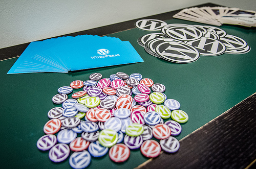
Let’s start with step by step process of building a site.
Step 1: Signup to WordPress.com
First you need to signup at WordPress.com so go to http://wordpress.com/ you would find a screen like the below one. Click on Get Started. You would be redirected to a signup page.
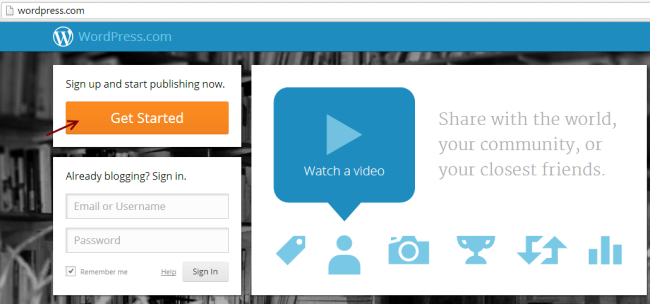
Fill out the signup form. The fields you must need to provide are E-mail Address, Username, Password and Blog Address (Domain name). Click on Create Blog!
There are few things which you must know – The domain name you choose would be suffixed with WordPress.com (since you are using WordPress platform for creating free website), for example I choose a blog name as easysteps2buildwebsite and it has automatically been suffixed with wordpress.com so my complete domain name (Website’s address) is easysteps2buildwebsite.wordpress.com.
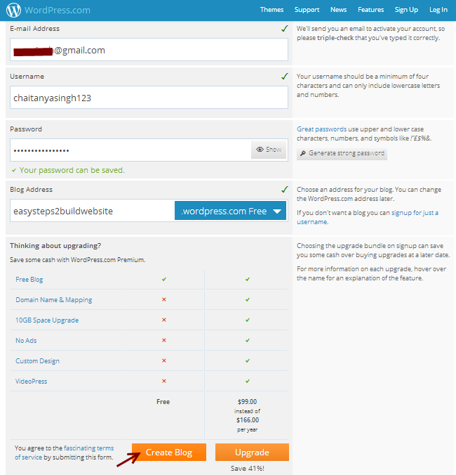
Step 2: Confirm email and Activate Blog
Once you are done with step 1, you would be able to see a screen like the below one, which will ask you to confirm your E-mail Address.
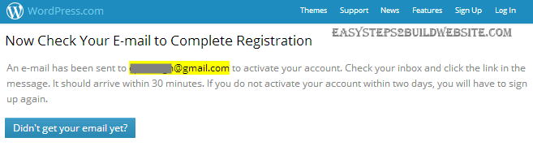
Head over to your email and Click on Activate Blog! in order to confirm the Address. The email you get would look like the one shown below.
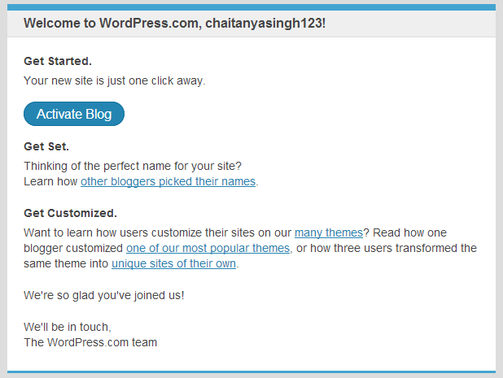
Step 3: Setup your blog
Once you are done with step 2, you would be asked for the few details about your new website such as blog Title, tagline and Language. Click on Next Step after filling up all these details.
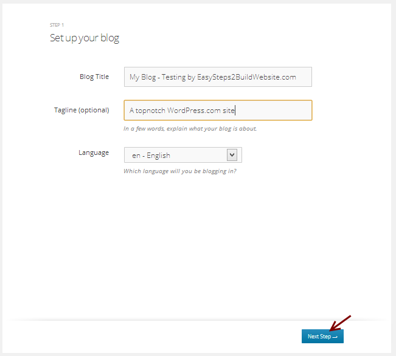
Step 4: Choose and Customize WordPress theme
In this step you must need to choose a theme for your website. There you would find free and premium themes both. Choose any of the free theme, select it and head over to the next step.You can also browse more free themes at http://theme.wordpress.com/themes/sort/free/.
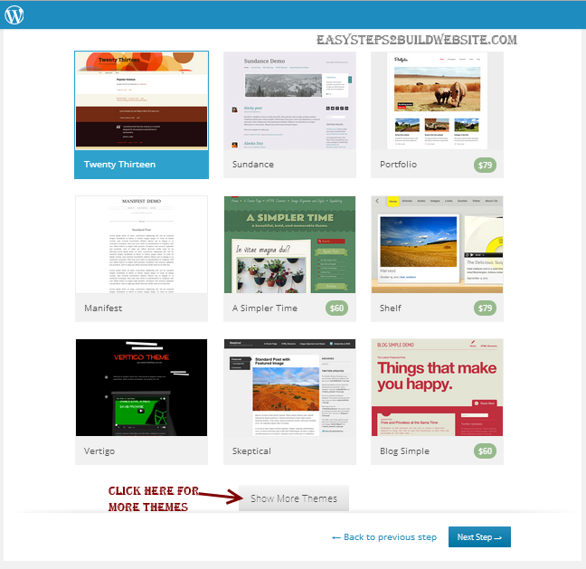
Customize the theme if you want otherwise click Next Step
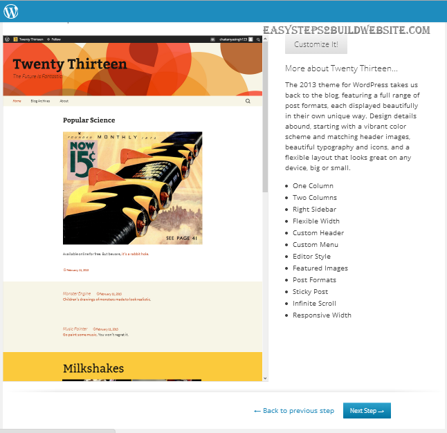
Step 5: Connect with Facebook or Twitter
You may choose to configure your twitter and Facebook accounts here. You can also skip this step and go to next step. You would be able to configure these items later.
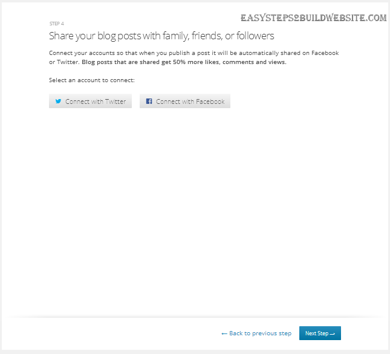
Step 6: Finish the Process
Click Finish! You have successfully created a free website on WordPress. It’s time to check how the website looks.
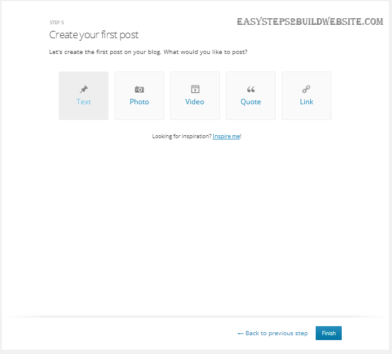
Step 7: Visit your newly created Website
Go to the browser and give your complete domain name (Website’s URL). You would be able to view your website. Cool huh! The whole process took just couple of minutes to setup everything. Wait!! We are not yet finished, it’s just the beginning, you would need to change the look and appearance of your website to make it look attractive. You can do so by referring the next section.
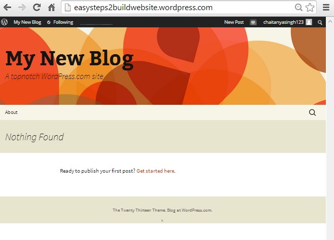
Change the Appearance
In order to change the appearance of your newly created website. Click on My Blog at the menu bar and then click on Change Appearance. Refer the below snapshot for the same.
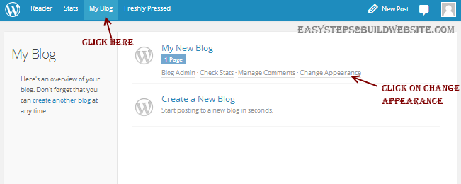
You would find the below screen. This is your WordPress Dashboard, you can do lot more things using the left sidebar. We are on the Appearance tab in the left sidebar which allows you to customize existing theme and switch between new themes. Are you able to see the left black sidebar? let me cover few basic things about the sidebar before I finish this tutorial.
- Dashboard: For WordPress, Plugins and Themes updates.
- Posts: For editing, deleting and writing new posts.
- Media: For managing and uploading new media files such as images and videos
- Pages: For Managing and creating new pages on your Blog.
- Comments: For Moderating comments – Here you can approve, delete and reply to the comments.
- Appearance: We already covered it earlier – for trying out new themes and customization.
- Settings: Lot more things to do. Go through the settings and configure them as per the need.
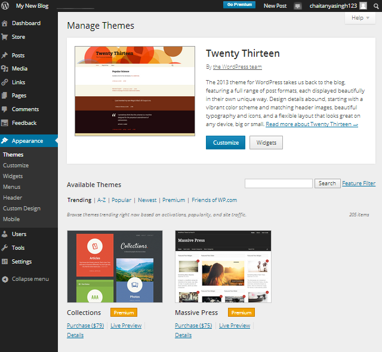
Final Words
That’s all for this. I’m pretty sure you must have created a cool website for free by following the above mentioned steps. If you have any questions and doubt regarding this, please feel free to drop a note at the comment section below, we will be pleased to assist you. Share your views and ideas on this to make it more informative so that even a beginner would be able to do it on his own. If you like the tutorial, share it with your friends on Facebook, Gplus and twitter.
Leave a Reply